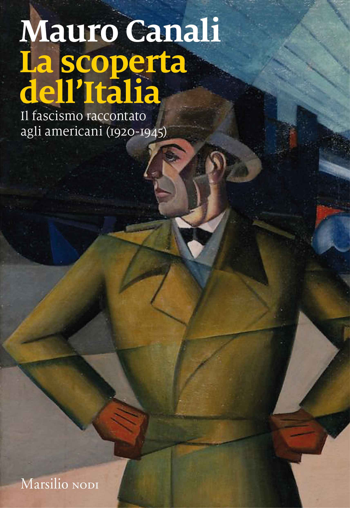

Di fronte al fascismo, parte della stampa statunitense azzardò analogie con i protagonisti della propria epopea. Gli Stati Uniti si sentivano vicini all’Italia laddove, usciti dal loro isolazionismo soltanto con la partecipazione alla Grande Guerra, erano passati per un periodo di forti agitazioni sociali di ispirazioni anarchica e comunista, testimoniato da opere letterarie quali _Il tallone di ferro (1907) di Jack London e La battaglia (1936) di John Steinbeck. In Italia i reporter americani, pur se abituati ad una forma di giornalismo “fotografico” e obiettivo piuttosto lontano dalle manipolazioni del Minculpop, e per quanto non sottovalutassero che nel regime fossero sistematicamente operanti il controllo dell’informazione e l’impiego di una fitta rete di spie, riuscirono a permettere a Mussolini una popolarità che arrivò ad attribuirgli una riforma del capitalismo unita all’umanitarismo sociale. _Mauro Canali _(docente di _Storia contemporanea all’Università di Camerino e membro del comitato scientifico di Rai Storia)_ in _La scoperta dell’Italia. Il fascismo raccontato dai corrispondenti americani (2017)_, ricorda che ciò accade, prima che la guerra in Etiopia e quindi le leggi razziali portassero definitivamente in direzioni opposte, anche con l’avvento del *_New Deal di Roosevelt*, che in un primo tempo condivise l’idea di un intervento statale in economia che superasse il liberismo, apprezzando inoltre in larga misura l’adozione di un modello di risoluzioni dei conflitti sociali quale il corporativismo, che prescindeva dal conflitto di classe. Da parte loro gli USA, dove erano comunque attive diverse opposizioni interne alla tendenza di conferire al Duce il merito di aver salvato l’Italia dal bolscevismo e di averla inserita nella modernità, divennero campioni della democrazia liberale soltanto in seguito: prima con l’ingresso in guerra contro i fascismi europei, e successivamente con la Guerra fredda contro i Sovietici. Il libro poi ci ricorda anche come di fronte al fascismo presero una posizione si opposizione, pur se inizialmente attratti oppure piuttosto vicini, lo scrittore americano Ernst Hemingway, dai cui reportage il regime si sentì decisamente umiliato, e lo scrittore italiano di origine tedesca Curzio Malaparte, che già dal 1938 collaborò con l’intelligence americana. Oggi, nel perdurare di un’ennesima crisi che pur nella sua stagnazione sembra cambiare di continuo parametri e schieramenti, diventa necessario riconsiderare le testimonianze dell’epoca e, senza forzare identificazioni tra realtà che hanno poi avuto esiti moto diversi, svolgere quelle comparazioni che il lavoro storico affronta per comprendere meglio il presente e così suggerire come evitare il ripetersi degli errori del passato. E di fronte a queste testimonianze, frutto di sei anni di lavoro di documentazioni nei giornali dell’epoca e negli archivi, possiamo chiederci: dov’è che il nostro giornalismo è ancora fascista? E dov’è che riesce ad essere persino peggio?
1. La genesi del Minculpop
Fin dalla sua ascesa al potere, Mussolini aveva pensato a un ufficio stampa che dipendesse direttamente da lui e che lo sostenesse nella sua opera di fascistizzazione dei giornali. A differenza della struttura analoga attiva durante gli anni dell’Italia liberale, le cui competenze erano limitate al compito di sottoporre all’attenzione del capo di governo tutto ciò che di pubblicato potesse interessargli, l’ufficio stampa fascista doveva essere elemento attivo di quel processo di normalizzazione e fascistizzazione avviato da Mussolini subito dopo essere andato al potere.
Il processo di normalizzazione della stampa mirava mirava all’eliminazione dei molti e pletorici fogli fascisti, spesso organi dei ras locali, fioriti tra la fondazione dei fasci e la marcia su Roma e che portavano solo rissosità e disorientamento nel movimento fascista, mentre la fascistizzazione era intesa come azione sui giornali cosiddetti “indipendenti“ per indurli a sostegno diretto o indiretto dell’attività del governo. La pressione su direttori e proprietà veniva esercitata in molti modi, non escluse la corruzione, l’intimidazione o la violenza.
Dopo aver decretato il passaggio dell’ufficio stampa alle sue dirette dipendenze, Mussolini lo aveva affidato a uno dei suoi più fedeli e intelligenti collaboratori, Cesare Rossi, a capo anche della Ceka fascista, la politica segreta mussoliniana. Rossi, che nel giugno 1924 sarebbe stato costretto a dimettersi travolto dalla crisi provocata dall’assassinio Matteotti, riuscì, malgrado la brevità del suo mandato, a operare una parziale fascistizzazione degli organi di stampa, soprattutto della provincia - stampa minore certo ma importante tuttavia per il consenso dal governo fascista -, e a costruire anche un’embrionale rete di informatori attivi negli ambienti giornalistici [1].
Rossi veniva sostituito da Maffio Affii, che resse la carica fino all’8 gennaio 1925, quando lasciò il posto al prefetto Emilio Severini, a sua volta sostituito assai presto, il 21 aprile 1925, dal conte Giovanni Capasso Torre di Pastene. [2] Quest’ultimo ampliava le competenze delle due sezioni - stampa interna e stampa estera - in cui si articolava l’attività dell’ufficio, e il 27 maggio 1926 assumeva anche la direzione dell’ufficio stampa del Ministero degli affari esteri. Il barone Pietro Arone di Valentino, che aveva diretto l’ufficio stampa per i precedenti tre anni, assumeva agli Affari esteri la direzione generale degli affari di America, Asia, Africa e Australia [3].
Con questa operazione Mussolini portava sotto il suo diretto controllo l’attività di tutta la stampa estera a Roma. La brillante ascesa di Capasso Torre terminava bruscamente nel settembre 1928, quando dovette farsi da parte e lasciare il posto a Lando Ferretti, il quale, inviso tuttavia sin dall’inizio agli ambienti politici fascisti perché considerato un arrivista con le mani in equivoci affari di sottogoverno (parte dei suoi traffici sono documentati in una trentina di lettere finite sulla scrivania di Mussolini) [4], veniva sostituito nel dicembre 1931 da Gaetano Polverelli, spodestato a sua volta nell’agosto del 1933 da Galeazzo [5].
Con l’arrivo del genero di Mussolini l’ufficio cambiò sede trasferendosi, nel luglio 1934, dal Viminale al prestigioso palazzo Balestra in via Vittorio Veneto, e crebbe di importanza, divenendo, nel settembre 1934, il Sottosegretariato per la stampa e la propaganda, mentre le due vecchie sezioni, stampa italiana e stampa estera, e la nuova sezione propaganda, ideata da Polverelli verso la fine del suo mandato, ma realizzata da Ciano, venivano elevate al rango di direzioni generali. Da parte sua, nell’aprile del 1933 Polverelli aveva già assunto Gastone Silvano Spinetti e Annibale Scilugna ai _«servizi di propaganda delle realizzazioni del Regime»; la manovra venne completata però a settembre da Ciano, subito dopo il suo arrivo all’ufficio stampa, con l’assunzione di Corrado D’Errico «con funzioni direttive del servizio di propaganda»_ [6].
Di lì a qualche mese, il Sottosegretariato diveniva il Ministero della cultura popolare, noto più semplicemente come Micupop o Minculpop. La legge del 1937 si era limitata a modificarne il nome, lasciandone inalterata la struttura. La vera riforma, con una maggiore articolazione di divisioni, uffici e competenze, giunse con il decreto ministeriale del 12 febbraio 1938. Quando nel giugno 1936 Ciano venne chiamato a dirigere la politica estera, fu sostituito al Ministero stampa e propaganda da Dino Alfieri, il quale ne accompagnò anche la trasformazione successiva in Minculpop, rimanendo poi al suo vertice fino all’ottobre 1939. Gli succedette Alessandro Pavolini, che ne fu il responsabile fino al 6 febbraio 1934, quando venne rilevato dal «ripescato» Gatetano Polverelli, che lo resse fino alla caduta di Mussolini.
Nel marzo del 1933 era giunto a dirigere la sezione stampa estera Giuseppe Sapuppo, richiamato a Roma da Quito, dove ricopriva la carica di ambasciatore. Sapuppo rimase ancora qualche mese dopo l’arrivo di Ciano, ma quando l’ufficio stampa venne trasformato in sottosegretariato, e le tre vecchie sezioni furono elevate al rango di direzioni generali, nell’ottobre del 1934 Ciano affidò a Emanuele Grazzi [7], che aveva già chiamato presso di sé, la direzione generale della stampa estera. Grazzi, che era già stato console generale a New York per cinque anni, poi incaricato di dirigere come inviato straordinario e ministro plenipotenziario le legazioni di Guatemala, El Salvador, Honduras e Nicaragua, mantenne la carica fino ai primi di giugno 1937, quando venne sostituito da Guido Rocco, che vi rimase quasi fino alla caduta del fascismo.
A metà degli anni Trenta, la direzione generale stampa estera era articolata in tre divisioni, con la prima e la seconda a gestire i rapporti con i giornalisti stranieri. A dirigere la prima, a partire probabilmente dal maggio 1937 fino al marzo 1938, fu Giovanni “Jack” Bosio [8], al quale succedette Vladimiro Rey di Villarey, proveniente dal consolato di Tiflis, che vi rimase fino al I° di ottobre 1943 [9].
Era la divisione seconda tuttavia a prendersi cura di tutti quegli aspetti del lavoro che ponessero i corrispondenti esteri operativi in Italia a gli inviati speciali di passaggio in contatto con le istituzioni pubbliche, interessandosi di comunicati, udienze, commendatizie, cerimonie, inviti, documentazione, lasciapassare, tessere e concessioni ferroviarie [10]. In un regime totalitario, che esercitava un controllo rigido su ogni articolazione della società civile e politica, ciò significava che il capo della divisione seconda era l’unico interlocutore governativo quotidiano dei giornalisti stranieri. Fino al 1934, e cioè fino a quando esistette l’ufficio stampa con due sezioni, i giornalisti esteri ebbero più rapporti diretti con il responsabile dell’ufficio che con i capi delle sezioni, ma quando l’attività di burocratizzò, con l’istituzione del sottosegretariato prima e del ministero poi, le distanze tra il responsabile del dicastero e i giornalisti stranieri si accrebbero, e questi ultimi ebbero sempre più a che fare con il capo divisione.
A dirigere la divisione seconda dalla fine del 1935 al maggio 1937 fu Giovanni “Jack” Bosio, in precedenza collaboratore di Dino Grandi all’ambasciata italiana a Londra, sostituito da Tristano Gabrici (proveniente dal consolato di Valparaiso) [11], che vi rimase fino al maggio 1939 e lasciò a sua volta il posto al marchese Benedetto Capomazza di Campolattaro, esponente di una nobile famiglia napoletana e proveniente dall’ambasciata italiana di Washington. A succedere a Capomazza fu il conte Alberto Barbarich, nominato nel novembre 1941, ma che dovette attendere fino a luglio del 1942 per prendere possesso della carica. Era stata infatti nel frattempo dichiarata guerra agli Stati Uniti, e il ritorno in patria di Barbarich, che occupava la carica di primo segretario di Legazione presso l’ambasciata italiana a Buenos Aires, fu piuttosto complicato, Poté imbarcarsi per l’Europa solo grazie a un salvacondotto diplomatico rilasciato dagli Stati Uniti. Rimase a dirigere la divisione fino al I° aprile 1943, quando verrà nominato segretario generale della Luogotenenza di Albania [12].
2. Forme e modi della censura fascista
Nei suoi primi anni di vota il governo fascista dovette ricorrere, per gli interventi censori nei confronti della stampa nazionale, all’Editto Albertino del 26 marzo 1848, mentre, per alcune forme di censura preventiva, si spirò ai progetti di legge razionali del 1898 e 1899 e alla legislazione straordinaria del periodo di guerra. Era possibile ricorrere anche all’espulsione, se l’attività di un cittadino straniero fosse stata giudicata dannosa agli interessi del paese, ma essa comportava in genere il sorgere inevitabile di spinose questioni di carattere diplomatico, perciò la consapevolezza da parte del nuovo potere di una sua posizione non ancora consolidata sconsigliava di farvi ricorso se non in casi estremi. La situazione politica esistente non offriva quindi al fascismo appigli abbastanza robusti per imbrigliare con efficacia l’attività dei giornali di opposizione e, in assenza di leggi ad hoc, il governo di Mussolini operò in modo improvvisato affidandosi piuttosto al deterrente della violenza squadristica.
Qualcosa cambiò con il decreto legge sulla stampa approvato il 15 luglio 1923 ma entrato in vigore solo un anno dopo, Tra i motivi che autorizzavano la sanzione contro un giornale la legge prevedeva il reato di diffusione di «notizie false e tendenziose», che potessero recare un «intralcio all’azione diplomatica del Governo nei rapporti con l’estero» o danneggiare «il credito nazionale all’interno o all’estero». Al riparo di un pretesto giuridico, seppur fondato su un’accusa abnorme e illiberale, il governo poteva ora invitare il corrispondente estero, accusato di diffusione di notizie «false e tendenziose», a lasciare il territorio italiano come «persona non gradita». Si trattava di un provvedimento presente in modo generico nella legislazione passata, ma ora, formulato in modo così netto e inequivocabile, lasciava intendere la volontà politica del governo fascista di ricorrervi senza esitazione.
Anche se questa legge ebbe piena attuazione solo a partire dalla sua pubblicazione del luglio 1924, già dall’estate del 1923 i prefetti cominciarono a fare un più deciso ricorso alle leggi generiche preesistenti relative al danno provocato al paese da attività ostili, mentre l’ufficio stampa di Mussolini inaspriva l’intervento censorio nei confronti dei corrispondenti esteri, che dovevano comunque servirsi, per inviare i loro dispacci, a istituzioni sotto il controllo dello Stato fascista.
La censura veniva effettuata in un ufficio al terzo piano - la black room, come veniva chiamata dai giornalisti - del palazzo delle poste centrali di piazza San Silvestro, da cui partivano cablo e telegrammi per l’estero. I cablo venivano esaminati dal censore dell’ufficio stampa del Ministero degli affari esteri colà distaccato, il quale «ti controlla, ritarda i tuoi dispacci, spesso li sopprime o li manipola. E tutto fatto segretamente» [13]. Fu Clarence Streit del Public Ledger a sperimentare questi primi interventi censori del governo fascista. I ritagli di tutti i dispacci che egli inviò allora al suo giornale, da lui versati alla Library of Congress di Washington, con gli appunti autografi a margine delle manipolazioni censorie subite da alcuni di essi, consentono di prendere conoscenza delle modalità degli interventi compiuti dalla censura nei confronti dei suoi cablo. Lo ricorda una nota autografa a margine del dispaccio che inviò il giorno dell’arrivo di Mussolini alla stazione Termini per l’assunzione dell’incarico di primo ministro, quando scriveva che in quel periodo «molto veniva tagliato dai miei dispacci dalla censura, che spesso cambiava il testo per far apparire i fatti migliori di quanto io non riferissi» [14].
Streit fu testimone oculare del moderato entusiasmo e interesse con cui Mussolini venne accolto a Roma. «Io ero vicinissimo ai gradini del suo vagone-letto - appunta su uno dei ritagli - e quando egli scese per come io ricordo non vi erano molti ad attenderlo». _Egli ricordava ancora di aver inviato un articolo in cui aveva scritto che la città «non mostrava grande entusiasmo per i fascisti», e aveva constatato con stupore che il censore «aveva tolto il non», facendo assumere alla frase «un significato del tutto falso»_ [15]. In un altro dispaccio del I° novembre, che portava il titolo _Fascisti Violence Continues in Rome_, Street aveva scritto che «i fascisti finora _non [soppresso] _hanno dato a Roma una dimostrazione imponente di forze armate ben organizzate, disciplinate. E Roma si è mostrata impressionata ma non [sostituito con ed] entusiasta» [16].
Streit informava inoltre che la censura fu particolarmente attiva sui dispacci relativi alla marcia su Roma, da cui soppresse molte parole, per dare ad americani, inglesi e altri lettori lontani «una idea diversa della accoglienza riservata ai marciatori che di fatto fu fredda». C’era un’altra forma di censura che Street sperimentò, cioè quella di non far partire affatto i dispacci sgraditi. Un’intervista a Vorovsky, rappresentante del governo sovietico a Roma, che pure aveva ricevuto il benestare formale dell’ufficio censura, non era mai giunta a destinazione. Il quel caso, la tattica seguita dal censore fu «di assopire i sospetti del corrispondente con un atteggiamento di apparente liberalismo, per poi tranquillamente sopprimere il dispaccio» [17].
Un altro escamotage, forse il più usato, era quello di far partire in ritardo il telegramma. Fornire una notizia con molte ore di ritardo significava renderla una non notizia. Un telegramma di Camillo Cianfarra, il già citato corrispondente da Roma dell’UP, inviato da Roma la sera del 28 novembre era giunto a Londra la sera del 30 novembre [18]. Uno tra i primi interventi con diffida da parte delle autorità fasciste a un giornalista americano per diffusione di notizie ritenute dannose per l’immagine all’estero del paese riguardava Helen Augur, del New York Herald. _Nel corso del 1922, il giornale newyorkese l’aveva inviata a coprire l’ufficio di Roma; la sua presenza è segnalata il 22 ottobre 1922, pochi giorni prima della Marcia su Roma, da Prezzolini che, nel suo diario, informava di star collaborando «con Miss Augur, giornalista americana»_ [19].
Nel luglio del 1923 aveva inviato un telegramma al proprio giornale su alcuni scontri di piazza provocati da squadristi fascisti fiorentini. Il telegramma venne bloccato e la giornalista diffidata, malgrado avesse assicurato la sua «sincera ammirazione verso l’Italia e verso il Fascismo», perché le notizie erano state giudicate dal prefetto «molto esagerate e in qualche parte del tutto false», tali comunque da suscitare un’impressione negativa «sulle condizioni dell’ordine pubblico a Firenze». Da allora, la Agur venne costantemente pedinata da un poliziotto in borghese; nel settembre 1923 essa lasciava definitivamente l’Italia per trasferirsi a Vienna [20].
Nel luglio del 1924 venne reso pienamente operativo il decreto legge sulla stampa dell’anno precedente; così, si operò ai sensi di due decreti legge: il n. 3288 del 15.07.1923, integrato con il decreto n. 1081 del 10.07.1924. Nel clima rovente seguito al delitto Matteotti era chiara la volontà del governo fascista di porre, con il controllo sulla stampa, dei limiti all’offensiva politica dei suoi avversari. Il fascismo si difendeva limitando la libertà di stampa. E se fino ad allora si era accontentato delle scuse del giornalista e delle sue assicurazioni a non reiterare l’errore, in seguito non mostrò più esitazioni a espellere, come avvenne, tra il luglio 1924 e il luglio 1925, con il giovane freelance Linton Wells e con il corrispondente estere della* Tribune*, George Seldes.
Il minaccioso riferimento alle «notizie false e tendenziose» presente nel decreto non tardò a far sentire i suoi effetti, diffondendo il timore della rappresaglia e dell’espulsione, e da allora condizionò profondamente non solo l’attività professionale dei giornalisti ma anche la loro vita sociale, costringendoli a selezionare con maggiore attenzione le frequentazioni di cittadini italiani. L’esclusione inevitabile, di questi ultimi, di coloro che fossero in odore di antifascismo o semplicemente invisi al regime, condannò la comunità dei corrispondenti esteri a una sorta di autoemarginazione dalla vita intellettuale e culturale del paese .
Da allora fu come se essi vivessero in una colonia ostile. Si riunivano e si accompagnavano tra di loro, con pochi prudenti contatti con gli italiani, perché, come ha scritto uno di loro, le spie potevano essere dovunque. Occorreva diffidare anche delle occasioni di vita sociale in cui fossero presenti italiani, quanto al contrario lo scambio di idee, «considerato il fermento politico che stava agitando l’Italia, sarebbe risultato utile per un corrispondente di giornali». Insomma, era sempre vivo «il timore di parlare» [21].
Talvolta, rischiava rischioso confidarsi anche con gli stessi colleghi della stampa estera, poiché era ormai noto che la rete Ovra, la polizia segreta fascista, era ben radicata anche all’interno dell’Associazione stampa estera, che raccoglieva la maggior parte dei corrispondenti stranieri attivi a Roma, e si sapeva che alcuni membri di questa e dei tipsters erano delle spie. Non di rado i corrispondenti avevano potuto constatare come opinioni da loro espresse anche in privato, con amici e colleghi, fossero giuste all’orecchio della polizia, che sembrava essere al corrente di tutto ciò che accadeva in seno all’associazione e financo nelle redazioni delle agenzie e dei giornali.
3. Stampa totalitaria in regime totalitario
I primi passi nella costruzione della stampa totalitaria si accompagnarono a quelli compiuti da Mussolini nella costruzione del regime totalitario. Dopo il discorso del 3 gennaio 1925 e, ancora di più, con le leggi “fascistissime” del novembre 1926, uscivano rafforzati i poteri dei prefetti, i quali da allora poterono intervenire in maniera ancora più arbitraria, con sequestri dei giornali e diffide dei giornalisti. Era una minaccia incombente su chi si fosse dimostrato poco incline ad allinearsi alle direttive del governo, per le quali i due decreti già attivi erano stati perfezionati dalla legge n. 2307 del 31.12.1925 e da alcune circolari ai prefetti del ministero dell’Interno Federzoni [22].
La messa fuori legge di tutti i partiti politici rese ancora più difficile per i giornali e i corrispondenti esteri il rispetto delle leggi liberticide sulla stampa, poiché ampliava la casistica dei divieti la cui infrazione comportava l’accusa di diffusione di notizie false e tendenziose e di danno all’azione di governo e all’immagine del paese. La genericità dell’accusa consentiva un’ampia discrezionalità interpretativa, e interventi sanzionatori del tutto arbitrari che andavano, per il giornale, dal divieto di circolazione per un periodo stabilito alla chiusura del suo bureau locale e, per il corrispondente, dall’ammonizione e diffida all’espulsione. Quando si trattava di un articolo scritto da un giornalista residente all’estero, oltre che al sequestro e alla quarantena del giornale, vi era il divieto d’ingresso in Italia sine die per l’autore dell’articolo.
L’espulsione comportava conseguenze molto serie sia per il giornalista sia per il giornale, che si vedeva costretto in genere a riorganizzare i suoi boudreaux, con un turnover dei corrispondenti delle altri sedi europee che comportava un inevitabile, seppur temporaneo, scadimento della qualità delle corrispondenze. Il giornalista trasferito aveva bisogno di tempo per assimilare lingua, storia e situazione politica del nuovo ambiente, e per ripristinare una rete dei tipster in grado di raccogliere per lui notizie e voci degli ambienti politici locali. Corrado Binder spiegava al suo capo a Parigi la sua scarsa produttività iniziale per il tempo da lui dedicato non solo allo studio della lingua, ma a quello dei «fondamenti», cioè «storia, costume, personalità, etc.» [23]. Per il giornalista, che spesso aveva con sé la famiglia, nel frattempo integratasi nella vita del paese ospite, un trasferimento rappresentava uno sconvolgimento della vita privata. Significava inoltre perdere lo status di una vita agiata consentitagli dal cambio favorevole lira-dollaro [24].
C’era poi il fascino che Roma, con la sua storia, la sua arte, i suoi monumenti, la sua gente civile e ospitale, i ritmi pigri e indolenti della vita cittadina, esercitava sugli stranieri in genere e sugli americani in particolare. Il giovane John Gunther del Daily News, che pure odiava Mussolini e il fascismo, aveva trovato Roma «una città deliziosa», e così gli italiani [25], mentre Hiram Moderwell profetizzava al suo successore che avrebbe sicuramente amato l’italia, purché fosse riuscito a tenere «la politica ben serrata in un distinto settore della […]_ mente»_ [26]. Jane Eads, moglie di Seymour Berkson, anch’essa giornalista, ricordava ancora molti anni dopo le emozioni della sua vita a Roma. Il suo appartamento dava si uno degli scorci più esclusivi della città, la scalinata di Trinità dei Monti. Essa raccontava come dalle loro finestre potessero «osservare la gente scendere giù dalla scalinata» e godere della vista di «tutti e sette i colli di Roma, Sai, la vita e tutte le altre cose, era proprio una città affascinante» [27].
Con le leggi “fascistissime” il controllo del regime su tutta la carta stampata in entrata e in uscita dal paese divenne asfissiante. La stessa circolazione di libri critici verso il fascismo era limitata e soggetta a particolare sorveglianza.
John Gunter consigliava a Binder di acquistare libri di oppositori del fascismo - come, ad esempio, William Bolitho, Italy under Mussolini, e le opere di Salvemini e Sturzo - prima di entrare in Italia e, per evitare che venissero sequestrati alla frontiera, di avvolgerli in carta di giornale, poiché, avvertiva, «in Italia non è possibile acquistare alcun libro antifascista» [28]. La polizia fascista, come un Argo insonne, poteva contare su mille occhi per controllare le mosse dei suoi nemici. Quello dei corrispondenti stranieri, in particolare anglo-americani, era considerato uno degli ambienti da sottoporre a un controllo oltremodo stretto, perché considerato, sopratutto da un certo momento in poi, anche potenzialmente nemico.
Il controllo veniva affidato principalmente all’Ovra, la polizia segreta, che infiltrò suoi informatori all’interno degli uffici dei giornali e dell’Associazione stampa estera (Ase). Solo per citarne alcuni: Antico Pucci, Luigi Boschetto, Valerio Benuzzi, Vittorio Falorsi, Filippo Setaccioli, Italo Tavolato, Fritz Kusen, Charles Michel Delagneau, Felice Link, Nino Battistone, Da Aldisio padre e figli, Pietro Scanziani, e lo stesso presidente Robert Hodel. Per un giornalista la frequentazione dei locali dell’associazione era importante, poiché gli consentiva di tenersi aggiornato su tutto ciò che accadeva o si diceva o si mormorava nel mondo politico. L’iscrizione ad essa consentiva inoltre l’accesso ai luoghi dove si svolgeva l’attività politica del regime, dando il diritto di assistere alle sue varie iniziative politiche o propagandistiche. Vi erano infine i benefits per il corrispondente e la sua famiglia, come i viaggi gratuito in treno, che permettevano sul minimo di mobilità sul territorio italiano, sempre previo assenso delle autorità fasciste.
Ma proprio per la centralità che assumeva l’associazione nella vita professionale del corrispondente, il suo controllo da parte del regime acquistava un’importanza capitale, ed essa in breve divenne un organo del tutto fascistizzato. Il regime operò garantendosi la fedeltà dei suoi vertici, che per molti anni furono rappresentati dagli svizzeri Robert Hodel e Theodore Vaucher, e dal polacco Kociemski, del tutto asserviti al fascismo [29]. Per il suo ruolo di garante della fascistizzazione dell’ade, Hodel percepiva dall’ufficio stampa di Mussolini diecimila lire mensili; per colpire il loro reale motivo queste venivano erogate come indennità per la pubblicazione di un bollettino che doveva servire alla propaganda in Germania del regime fascista, dal titolo IKO [30].
Il regime fascista negò sempre l’esistenza in Italia della censura nei confronti dei corrispondenti esteri. Si trattava di affermazioni ipocriti e sostanzialmente mendaci. La genericità della formulazione di leggi e decreti forniva infatti moltissimi pretesti per ostacolare o impedire l’invio da Roma di corrispondenze critiche nei suoi confronti, o per porre in atto azioni di rappresaglia verso quei corrispondenti che si mostrassero impermeabili alla propaganda fascista, apertamente o solo parzialmente critici verso il regime mussoliniano, o che manifestassero disinteresse per le sue veline ufficiali. Risultava molto facile per il regime accusare un corrispondente straniero, i cui articolo fosse in contrasto con le “verità” ufficiali, di diffondere notizie false e tendenziose.
Decisiva ai fini dell’onnipotenza e dell’onnipotenza della censura fu, con la costruzione del regime a partito unico, e la conseguente trasformazione del partito fascista in partito-stato, l’identificazione del regime con il paese, poiché fu facile definire dannose agli interessi dell’Italia le critiche che in realtà venivano mosse solo al fascismo. Insomma, criticare il regime significava danneggiare l’Italia. Per questo, grazie al deterrente dell’espulsione, il regime poté contare soprattutto sull’autocensura.
•
[1] Mauro Canali, Cesare Rossi. Da rivoluzionario a eminenza grigia del fascismo, Il Mulino, Bologna 1991.
[2] ASMAE (Archivio storico Ministero degli affari esteri), Personale cessato 1940-1950-1960, b. 39; Patrizia Ferrara, Il Ministero della Cultura popolare, in L’Amministrazione centrale dall’Unità alla Repubblica. Le strutture e i dirigenti, a cura di Guido Melis, Il Mulino, Bologna 1992.
[3] ACS (Archivio centrale dello Stato), PCM (Presidenza del consiglio dei ministri), 1927, 1.111/51
[4] Ivi; SPD CR (Segreteria particolare del Duce - Carteggio riservato), b. 84.
[5] Ivi, PCM, 1934-1936, 1.1.11/997.
[6] Ivi.
[7] ASMAE, Personale, Serie I - Diplomatici e consoli, II Versamento Nominativo, b. 26.
[8] Per il fascicolo personale di Giovanni “Jack” Bosio, si veda ivi, Personale cessato, 1940-1950-1960, Elenco 1, b. 25; inoltre ivi, Minculpop, b. 550.
[9] Ivi, b. 364.
[10] Ivi, Elenco 4, b. 954.
[11] Ivi, Elenco 4, b. 954.
[12] Ivi, Elenco 3, b. 591. Cfr. ivi, Personale, Serie I, Pos. B 18, b. 127, fasc. 256.
[13] George Seldes, You Can’t Print That!, Payson & Clarke Ltd., New York, 1929, p. 79.
[14] Dispaccio CKS - nov. 6 - 1979; Clarence K. Street Papers, Library of Congress, Washington.
[15] Clarence K. Streit, in Neil MacNeil, Without Fear of Favor, New York, Harcourt, Brace and Company, 1940, p. 127.
[16] Clarence K. Streit Papers, Library of Congress, Washington.
[17] Clarence K. Streit, in Neil MacNeil, Without Fear of Favor, cit., p. 127.
[18] ACS. Carte Federzoni, scatola 3.
[19] Giuseppe Prezzolini, Diario 1900-1941, Rusconi, Milano 1978, p. 363.
[20] ACS, PS, cat. A1, 1923, b. 2, fasc. Augur Helen.
[21] David Darrah, Hail Caesar!, Boston-New York, Hale, Cushman & Flint, p. 32.
[22] Testo integrale dei due decreti e delle circolari, in Alberto Acquarone, L’organizzazione dello stato totalitario, Einaudi, Torino 1966, pp. 344-349.
[23] Lettera 20.11.1927, in Carrol Binder Papers, 11.1020, Newberry Library Archives, Chicago.
[24] Carrol Binder, in John M. Hamilton, Journalism’s Roving Eye. A History of American Foreign Reporting, Lousiana State University Press, Baton Rouge 2009, p. 279.
[25] Lettera a Carrol Binder del 3.09.1927, in Carrol Binder Papers, 20.1846, Newberry Library Archives, Chicago.
[26] Lettera a Binder del 27.08.1927, in Carrol Binder Papers, 21.2015, ivi.
[27] Intervista a Jane Eads, Women in Journalism, pp. 51-52, nel sito della Washington Press Club Foundation.
[28] Carrol Binder Papers, 20.1846, Newberry Library Archives, Chicago.
[29] David Darrah, Hail Caesar!, cit. p. 40.
[3o] Fascicolo personale di Robert Hodel, in ACS, Polizia politica, fasc. pers. b. 660; cfr. inoltre ASMAE, Minculpop, b. 831, in particolare la relazione in data 17.05.1932 del capo dell’ufficio stampa a Mussolini.
•
Tratto da Mauro Canali, La scoperta dell’Italia. Il fascismo raccontato dai corrispondenti americani, Marsilio, Venezia 2017 (pp. 496), pp. 163-175 (adattamento di Claudio Comandini).

ISBN: 978-88-317-2756-3 - € 20,00